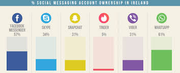
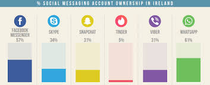

First topic
Facebook is a popular free social networking website that allows registered users to create profiles, upload photos and video, send messages and keep in touch with friends, family and colleagues..
Facebook is a popular free social networking website that allows registered users to create profiles, upload photos and video, send messages and keep in touch with friends, family and colleagues..
 Twitter
Twitter
Twitter is a free microblogging service that allows registered members to broadcast short posts called tweets. Twitter members can broadcast tweets and follow other users' tweets by using multiple platforms and devices..
How much data is created on the web every minute? How about every day? Numbers don’t do it justice, so we created an infographic to show the staggering amount of content created every sixty seconds from websites you use on a regular basis. The answers may surprise you. This is what you’ll learn: How many apps are downloaded Number of Tinder swipes Google search queries
Social media is becoming an integral part of life online as social websites and applications proliferate. Most traditional online media platforms include social components, such as comment fields for users. In business, social media is used to market products, promote brands, connect to current customers and foster new business..
Social media analytics is the practice of gathering data from blogs and social media websites and analyzing that data to make business decisions. The most common use of social media analytics is to mine customer sentiment to support marketing and customer service activities..